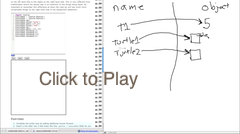

Variáveis, Expressões e Comandos¶
No início do aprendizado de qualquer linguagem de programação existem alguns conceitos e idéias básicas que são necessários. O objetivo deste capítulo é introduzi-lo ao vocabulário básico de programação e alguns dos conceitos fundamentais de Python.
Variáveis e tipos de dados¶
Um valor é um dos coisas fundamentais — como uma palavra ou
número — que um programa manipula. Os valores que vimos até o
momento são 5 (o resultado quando fazemos a adição 2 + 3), e
"Olá, mundo!". Nós frequentemente nos referimos a esses valores
como objetos e usaremos as palavras valor e objeto
indiscriminadamente.
Note
Na verdade, o 2 e o 3 que são parte da adição acima são também valores (objetos).
Esses objetos são classificados em classes ou tipos de dados
diferentes: 4 é um inteiro, e "Olá, mundo!" é um string ou texto
cadeia de caracteres, que recebe esse nome pois contém uma sequência
de letras ou caracteres. (N.T. Utilizamos também o termo em inglês
string já que esse é comumente usado por programadores.)
Você (e o interpretador) podem identificar
strings pois estes estão envolvidos por aspas.
Se você não está seguro sobre a classe a que pertence um valor, Python tem uma função chamada type que pode dizer-lhe isto.
(ch02_1)
Não é surpresa que strings pertençam a uma classe chamada str e inteiros pertencem a classe chamada int.
Note
Quando mostramos o valor de um string usando a função
print, como na terceira linha acima, as aspas não estão
presentes. O valor de um string é a sequência de caracteres entre
as aspas. As aspas são apenas necessárias para ajudar o Python a
saber qual é o valor delimitando-o.
No Python shell, não é necessário usar a função print` para ver o
valor mostrado acima. O shell executa a função e automaticamente
imprime o resultado. Por exemplo, consider a seção do shell exibida
abaixo. Quando pedimos para o shell executar type("Hello,
World!"), ele imprime a reposta apropriada e na próxima linha continua
exibindo o prompt para um novo uso.
Python 3.3.0 (default, Sep 29 2012, 17:14:58)
[GCC 4.7.2] on linux
Type "copyright", "credits" or "license()" for more information.
>>> type("Ola, mundo!")
<class 'str'>
>>> type(17)
<class 'int'>
>>> "Ola, mundo!"
'Ola, mundo!'
Observe que no último exemplo, nós simplesmente pedimos ao shell que avaliasse o string “Ola, mundo”. O resultado é como você poderia imaginar, o próprio string.
Continuando com nossa discussão sobre tipos de dados, números com ponto decimal (e não vírgula decimal) pertencem à classe chamada float, pois esses números são representados em uma forma que é chamada de ponto flutuante (floating-point). No presente estágio, você pode usar as palavras classe e tipo indiscriminadamente. Em capítulos mais adiante nós voltaremos a tratar de classe e a buscar uma compreensão mais profunda desse conceito.
(ch02_2)
E valores como "17" e "3.2"?
Eles parecem números, mas eles estão envolvoltos entre aspas como um string.
(ch02_3)
Eles são strings!
Strings em Python podem ser delimitados por apóstrofos (') aspas
("), ou três de cada (''' ou """)
(ch02_4)
Strings com aspas podem conter apóstrofos, como em "O símbolo ' é um
apóstrofo", e strings com apóstrofos podem conter aspas, como em
'Os cavaleiros que dizem "Ni!"'. Strings delimitados por três
aspas ou apóstrofos são chamadas de strings triplos (triple quoted
strings). Eles podem conter aspas, apóstrofos ou strings entre aspas
ou apóstrofos:
(ch02_5)
Strings triplos podem até se estender por várias linhas:
(ch02_6)
Python não se importa se você usa aspas, apóstrofes, aspas triplas ou apóstrofes triplos para envolver um string. Uma vez verificado que o texto do seu programa ou comando está sintaticamente correto, a maneira com que o valor será armazenada é identica em todos os casos e o símbolos delimitadores não fazem parte do valor. Entretanto, quando o interpretador exibe um string, ele tem que decidir qual símbolo usar para fazer com que ele se pareça um string.
(ch02_7)
Os projetista da linguagem Python usualmente decidem delimitar seus strings por apóstrofos. O que você acha que aconteceria se o string já possui-se um apóstrofo?
Quando você digita um inteiro grande, você poderia ficar tentado a
usar vírgulas (N.T. em países de língua inglês) ou ponto (N.T. em
países de língua portuguesa) entre grupos de três dígitos, como em
42,000 ou 42.000. Esses não são inteiros legítimos em Python,
mas têm outros significados, que são legitimos:
(ch02_8)
Bem, isto não é de maneira alguma o que esperávamos! Devido à
vírgula, Python decide tratar 42,000 como um par de valores.
Já, no caso do ponto, Python trata 42.000 como uma representação
como float do número 42. De fato, a função print pode imprimir
qualquer número de valores, contanto que estejam separados por
vírgulas. Observe que os valores são separados por espaços quando são
exibidos.
(ch02_8a)
Lembre-se de não escrever os seus números inteiros com vírgulas, pontos ou espaços, não importa quão grande eles sejam. Também reveja o que dissemos no capítulo anterior: linguagens formais são rigorosas, a notação é concisa, e mesmo com a menor das modificações o resultado pode significar algo bem diferente do que você pretendia.
Teste seu entendimento
2.1.1: Como você pode determinar o tipo de uma variável?
2.1.2: Qual é o tipo do valor 'que tipo de dado é esse'?
Funções para conversão de valores¶
Algumas vezes é necessário converter valores de um tipo para o outro. Python fornece alguns funções simples que permitirão que façamos isso. As funções int, float e str irão (tentar) converter seus argumentos para os tipos int, float e str, respectivamente. Nós as chamamos de funções para conversão de valores.
A função int pode converter para int um argumento numérico em ponto flutuante ou um string. Para números em ponto flutuante, a parte decimal do número é descartada - um processo que chamaremso de trucamento para zero ou simplesmente truncamento do número. Vejamos isto isto em ação:
(ch02_20)
O último exemplo mostra que o string deve representar um número
sintaticamente legal, em caso contrário você receberá um daqueles
erros de execução desagradáveis. Modifique o exemplo removendo
garafas e execute novamente o programa. Você deverá ver o inteiro
23.
O conversor de tipos float transforma um inteiro, um float ou um string representado um float de maneira sintaticamente legal em um float.
(ch02_21)
O conversor de tipo str transforma os seus argumentos em um string. Lembre-se que quando imprimimos um string, os apóstrofes ou aspas que o delimitam são removidos. Entretanto, se imprimimos o tipo de um string vemos que ele é str.
(ch02_22)
Teste seu entendimento
2.2.1: Qual valor é exibido pelo seguinte comando:
print( int(53.785) )
Variáveis¶
Uma das características mais poderosas de uma linguagem de programação é sua capacidade de manipular variáveis. Uma variável é um nome que se refere a um valor.
Comandos de atribuição (assignment statement) criam uma nova variável e também fornecem a elas o valor ao qual farão referência.
mensagem = "O que ha velhinho?"
n = 17
pi = 3.14159
Este exemplo faz três atribuições. A primeira atribui o string "O
que há velhinho?" a uma nova variável chamada mensagem.
O segundo atribui o inteiro 17` a n, e o terceiro atribui o
número em ponto-flutuante 3.14159 a variável chamada pi.
O operador de atribuição, =, não deve ser confundido com
igualdade, para a qual usamos ==. O comando de atribuição
associa o nome, que está à esquerda do operador, como o valor, que
está à direita. Por esta razão é que você receberá um mensagem de erro
se fizer:
17 = n
Tip
Quando estiver lendo ou escrevendo um programa, diga para você mesmo “17 é atribuído a n” ou “n recebe o valor 17” ou “n é uma referência ao objeto 17” ou “n se refere ao objeto 17”. Não diga “n é igual a 17”.
Uma maneira comum de se representar variáveis no papel é escrevendo o nome da variável com uma flecha apontado para o valor da variável. Este tipo de representação, conhecido como diagrama de referência, é frequentemente chamado de estado instantâneo pois mostra o estado de cada variável em um instante de tempo particular. (Imagine isto como sendo o “estado de mente” da variável.) Este diagrama mostra o resultado da execução de comandos de atribuição.

Se você pedir para que o valor de uma variável seja impresso, Python exibirá o valor que está atualmente associado à variável. Em outras palavras, ao imprimir uma variável será exibido o valor ao qual a variável se refere.
(ch02_9)
Em cada comando o resultado será o valor da váriável. Para ver isto em mais detalhes, podemos executar o programa usando codelens.
(ch02_9_codelens)
Agora, como você pode executar um comando por vez, você pode ver as variáveis e os valores a que elas se referem a medida que são criadas.
Variáveis também tem tipos; novamente, podemos perguntar ao interpretador o tipo das variáveis.
(ch02_10)
O tipo de uma variável é o tipo do objeto a que ela está se referindo no momento.
Usamos variáveis em programas para “lembrar” coisas, como o placar atual de um jogo de futebol. Mas variáveis são variáveis. Isto significa que elas podem ser alterados ao longo do tempo, exatamente como o placar de um jogo de futebol. Você pode atribuir um valor a uma variável e mais tarde atribuir um valor diferente a mesma variável.
Note
Isso é diferente do que ocorre em matemática. Em matemática, se você dá a x o valor 3, esse valor não pode ser alterado durante os seus cálculos.
Para verificar isso, leia e execute o seguinte programa. Você notará que mudamos o valor da variável dia três vezes e na terceira vez atribuímos um valor de um tipo diferente dos anteriores
(ch02_11)
Uma tarefa grande em programação diz respeito a fazer o computador lembrar coisas, e.g. O número de chamadas perdidas do seu telefone, e atualiza ou modificar a variável quando uma nova chamada é perdida.
Teste seu entendimento
2.3.2: Qual é o valor impresso ao final da seguinte sequência de comandos?
dia = "quinta-feira" dia = 32.5 dia = 19 print(dia)
Nomes de variáveis e palavras reservadas¶
Nomes de variáveis podem ser arbitrariamente longos. Eles podem
conter letras e dígitos, mas eles devem começar com uma letra um
caractere underscore. Apesar de ser possível usar letras maiúsculas,
por convenção não usaremos. Se você usar, lembre-se que a letra ser
maiúscula ou minúscula faz diferença. Beto` e ``beto são variáveis
diferentes.
O caractere underscore (_) pode aparecer no nome.
Ele é usado frequentemente em nomes formados por mais de uma palavra,
como meu_nome ou preço_do_chá_na_china.
Existem algumas situações em que os nomes começando com um underscore
têm um significado especial, portanto é mais seguro que iniciantes
usem variáveis que começam com uma letra.
Se você der a uma variável um nome ilegal, ocorrerá um erro de sintaxe. No exemploa seguir, cada nome de variável é ilegal.
76trombones = "grande parada"
mais$ = 1000000
class = "Ciencia da Computacao 101"
O nome 76trombones é ilegal pois não começa com uma letra.
Já mais$ é ilegal pois contém um caractere ilegal, o símbolo de
cifrão. Mas o que está errado com class?
Ocorre que class é uma das palavras reservadas (keywords) de Python.
As palavras reservadas definem a sintaxe da linguage e sua estrutura e
não podem ser usadas como nomes de variáveis.
Python tem pouco mais de trinta palavras reservadas (e uma vez ou
outra melhorias em Python introduzem ou eliminam uma ou duas):
| and | as | assert | break | class | continue |
| def | del | elif | else | except | exec |
| finally | for | from | global | if | import |
| in | is | lambda | nonlocal | not | or |
| pass | raise | return | try | while | with |
| yield | True | False | None |
Você pode desejar mater está lista à mão. Se o interpretador reclamar sobre um dos nomes de suas variáveis e você não sabe a razão, veja se ele está nesta lista.
Caution
Iniciantes algumas vezes confundem “significado para leitores humanos”
com “significativo para o computador”. Assim, eles imaginarão erroneamente
que ao chamarem uma variável de média ou pi, ele irá de
alguma maneira automática calcular a média ou automaticamente
associará a vaŕiável pi com o valor 3.14159. Não! O computador
não associa um significado semântico aos nomes de veriáveis.
Assim, você encontrará professores que deliberadamente não escolhem nomes significativos de variáveis quando estão lecionando para iniciantes — não por não acharem que é um bom hábito, mas porque eles estão tentando enfatizar a mensagem que você, o programador, deve escrever o código de programa para calcular a média, ou que você deve escrever um comando de atribuição para dar a uma variável o valor que você deseja que ela receba.
Teste seu entendimento
2.4.1: Verdadeiro ou falso: o seguinte nome é legal para uma variável em Python: Uma_boa_nota_é_A+
Comandos e expressões¶

Um comando (statement) é uma instrução que o interpretador
Python pode executar. Até agora só vimos o comando de atribuição.
Outros tipos de comando que veremos em breve são o comando while,
o comando for, o comando if e o comando import. (Existem
outros tipos também!)
Uma expressão (expression) é uma combinação de valores, variáveis, operadores e chamadas de funções. Expressões necessitam ser calculadas. Se você pde ao Pyhton que
(ch02_13)
Neste exemplo len é uma função nativa (built-in) no Python que
returna o número de caracteres em um string. Vimos anteriormente que
as funções print e type, logo este é o nosso terceiro exemplo
de uma função!
O cálculo de uma expressão (evaluation of an expression) produz um valor, que é a razão do expressão poder aparecer do lado direito de em um comando de atribuição. Um valor por si só é uma expressão e o mesmo para uma variável. Calcular o valor de uma variável resulta no valor ao qual a variável se refere.
(ch02_14)
Se dermos uma olhada neste exemplo simples do Python shell, veremos uma das diferenças entre comando e expressões.
>>> y = 3.14
>>> x = len("Ola")
>>> print(x)
3
>>> print(y)
3.14
>>> y
3.14
>>>
Note que quando entramos com o comando de atribuição, y = 3.14,
somente o prompt é retornado. Não existe valor. Isto é devido ao fato
de que comando, como comando de atribuição, não retornam valor
algum. Eles são simplesmente executados.
Por outro lado, o resultado da execução de um comando de atribuição é a criação de uma referência da variável, y, para o valor, 3.14. Quando executamos a função print com y como argumento, nós vemos o valor ao qual y se refere. De fato, digitando apenas y obtermos o mesmo resultado.
..operator, operand, expression, integer division
Operadores e operandos¶
Operadores são símbolos especiais que representam computações como adição, multiplicação e divisão. Os valores sobre os quais o operador trabalha são chamados operandos.
As seguintes expressões são legais em Python e os seus significados são mais ou menos claros:
20 + 32
hora - 1
hora * 60 + minutos
minutos / 60
5 ** 2
(5 + 9) * (15 - 7)
Os símbolos +, -, * e o uso de parênteses têm o mesmo significado
em Python do que têm em matemática. O asterisco (*) é i símbolo
usado para indicar multiplicação, e o ** é os ímbolo da exponenciação.
Adição, subtração, multiplicação e exponenciação fazem o que você espera.
(ch02_15)
Quando o nome de uma variável aparece no lugar de um operando, ele é substituido pelo valor a que ele se refere antes da operação ser realizada. Por exemplo, veja o que pode ser feito se desejamos converter 645 minutos em horas;
(ch02_16)
Em Python 3, operador de divisão usa o símbolo / que sempre apresenta o resultado em ponto flutuante.
No exemplo anterior, suponha que desejamos agora saber o número de horas cheias e quantos minutos restantes temos em 645 minutos. Python oferece divisão de dois sabores diferentes. O segundo é chamado de divisão inteira (integer division) e usa os operador //. Ele sempre trunca o resultado para o menor inteiro (à esquerda da linha real).
(ch02_17)
Tome cuidado para escolher o operador de divisão correto. Se você está trabalhando com um expressão que necessita de ponto flutuante, use o operador /. Se você deseja um resultado inteiro use //.
O operador módulo (modulus operator), também chamado de
operador resto (remainder operator) ou operador resto da
divisão (integer remainder operator) trabalho sobre os inteiros (e
expressões inteiras) e devolve o resto da divisão do primeiro operando
pelo segundo. In Python, o operador resto utiliza o símbolo de
porcentagem (%). A sintaxe é a mesma da dos outros operadores
(ch02_18)
Assim, 7 dividido por 3 é 2 com resto 1.
O operador resto é surpreendentemente útil.
Por exemplo, você pode utilizá-lo para verificar se um número é
divisível por outro — se x % y é zero, então x é divisível
por y. Também, você pode extrair o dígito ou dígitos mais à
direita de um número. Por exemplo, x % 10 é o dígito mais a
direita de x (na base 10). Similarmente x % 100 é o número
formao pelos dois último dígitos de x.
Finalmente, retornando ao nosso exemplo de tempo, o operador resto é extremamente útil para fazermos conversões, digamos, de segundos para horas, minutos e segundos. Se começamos com um certo número de segundos, digamos 7684, o programa a seguir usa divisão inteira e resto de divisão para converter segundos para uma forma mais clara. Siga o código passo a passo para se certificar que você entende como os operadores divisão e resto são usados para computar os valores corretos.
(ch02_19_codelens)
Teste seu entendimento
2.6.1: O que imprime o seguinte comando?
print (18 / 4)
2.6.2: O que imprime o seguinte comando?
print (18 // 4)
2.6.3: O que imprime o seguinte comando?
print (18 % 4)
Input¶

O program da seção anterior funciona corretamente, mas é muito
limitado pois somente trabalha com o valor total_segs. E se
desejássemos reescrever o programa de maneira que ele fique mais
geral. Uma coisa que poderíamos fazer é permitir o usuário entrar com
qualquer número de segundos. O programa então imprimiria o resultado
apropriado para para esse valor inicial.
Para fazermos isto necessitamos de uma maneira para receber valores (input) do
usuário. Felizmente, Python possui uma função nativa para
realizar essa tarefa. Essa função é chamada input.
n = input("Por favor, entre com o seu nome: ")
A função imput permite que apresentemos um texto ou prompt ao usuário (prompt string). Quando a função é executada o texto é exibido. O usuário da programa pode digitar o nome e pressionar a tecla enter. Quando isto ocorre o texto que foi digitado é retornado pela função input e, no presente caso, atribuído à variável n.
(inputfun)
Mesmo que você pessa ao usuário para digitar a sua idade, você
receberá como resposta um string como "17". Será o se trabalho,
como programador, converter esse string para int ou float, usando as
funções de conversão int ou float que vimos anteriormente.
(int_secs)
A variável segundos_str irá se referir ao atring que foi digitado
pelo usuário. Como dissemos anteriormente, mesmo que esse string seja
7684`, ele é ainda um string e não um número. Para convertê-lo para
um inteiro usamos a função ``int. O resultado será referenciado por
total_segs. Agora, cada vez que executamos o programa, você pode
entrar com um novo valor para o número de segundos a serem convertidos.
Teste seu entendimento
2.7.1: O que é impresso pelo seguinte comando?
n = input("Por favor, entre com sua idade: ")
# usuário entra com 18
print ( type(n) )
Ordem das operações¶


Quando mais de um operador aparece em um expressão, a ordem em que são realizadas as operações dependem das regras de precedência (rules of precedence). Python segue as regras de precedência dos seus operadores matemáticos da mesma forma que matemática.
- Parenteses tem a mais alta precedência e podem ser usados para
forçar que uma expressão seja calculada na ordem que você
deseja. Como expressões entre parênteses são calculadas primeiro
2*(3-1)é 4, e(1+1)**(5-2)é 8. Você pode usar parântese para tornar uma expressão mais legível, como em(minutos * 100) / 60, mesmo que isto não mude o resultado. - Exponeciação tem a segunda precedência mais alta, assim
2**1+1```é 3 e não 4, e ``3*1**3é 3 e não 27. Você pode explicar o por que? - Multiplicação e ambas as divisões têm a mesma precedência, que são
mais altas que adição e subtração, que também têm a mesma
precedência. Logo,
2*3-1``é 5 e não 4, e ``5-2*2é 1 e não 6. - Operadores com a mesma precedência são executados da esquerda
para a direira. Em álgebra dizemos que eles são associativos à
esquerda (left-associative). Desta forma na expressão
6-3+3a subtração é realizada primeiro e tem como resultado 3. Depois adicionamos 2 e obtemos o resultado 5. Se os operadores tivessem sido executados da direira para a esquerda o resultado seria6-(3+2)que é 1.
Note
Devido a alguma peculiaridade histórica, uma exceção à regra associativa à esquerda é o operador exponenciação **. Uma dica útil é sempre usar parênteses para forçar a ordem exata que você deseja quando há exponenciações envolvidas.
(ch02_23)
Teste seu entendimento
2.8.1: Qua é o valor a expressão a seguir?
16 - 2 * 5 // 3 + 1
2.8.2: What is the value of the following expression:
2 ** 2 ** 3 * 3
Reatribuição¶

Como mencionamos anteriormente, é legal fazer mais que uma atribuição para a mesma variável. Uma nova atribuição faz com que a variável existente se refira a um novo valor (e pare de se referir ao valor antigo).
(ch07_reassign1)
A primeira vez que bruce é impresso, o seu valor é 5, e na segunda
vez, seu valor é 7. O comando de atribuição muda o valor (o objeto) ao
qual bruce se refere.
Aqui está como uma reatribuição se parece em um diagrama de referências:

É importante notar que em matemática, uma igualdade é sempre
verdadeira. Se a é igual a b agora, então a será sempre igual a
b
Em Python, um comando de atribuição pode fazer duas variáveis iguais,
mas devido a possibilidade de reatribuição, elas não precisam
permanecer desta forma.
(ch07_reassign2)
Linha 4 altera o valor de a mas não altera o valor de b, logo
eles não são mais iguais. Teremos muito mais a dizer sobre igualdade
em um capítulo mais adiante.
Note
In some programming languages, a different
symbol is used for assignment, such as <- or :=. The intent is
that this will help to avoid confusion. Python
chose to use the tokens = for assignment, and == for equality. This is a popular
choice also found in languages like C, C++, Java, and C#.
Em algumas linguagens, um símbolos diferentes são usado para
indicar atribuição, como <- ou :=. A intensão é evita
confusão. Python optou por usar = para atribuição e ==
para igualdade. Esta é uma escolha popular e também encontrada
em liguagens como C, C++, Java e C#.
Teste seu entendimento
2.9.1: Depois das atribuições a seguir, quais são os valores de x e y?
x = 15 y = x x = 22
Atualização de variáveis¶
Uma das forma mais comuns de reatribuição é atualização (update) onde o novo valor da variável depende do antigo. Por exemplo.
x = x + 1
Isto significa pegue o valor de x, adicione um, e atualize x com o
novo valor. O novo valor de x é o anterior mais 1. Apesar desse
comando de atribuição parecer um pouco estranho, lembre-se que
executar uma atribuição é um processo de dois passos. Primeiro, o
valor da lado direito da expressão é calculado. Segundo, faça com que
o nome da variável que está no lado esquerdo se refira ao novo objeto
resultante. O fato que x aparece em ambos os lados não importa.
A semântica do comando de atribuição se encarrega que não haja
confusão sobre o resultado.
(ch07_update1)
Se você tentar atualizar uma variável que não existe, você receberá
uma mensagem de erro pois Python calcula o valor da expressão que está
do lado direito do operador de atribuição antes de atribuir o
resultado ao nome a variável do lado esquerdo. Antes que você possa
atualizar uma variável, você deve *inicializá-la (initialize
it), usualmente com uma atribuição simples. No exemplo anterior, x
foi inicializada com 6.
Atualizar uma variável adicionando-se 1 é chmado de incremento (increment); subtrair 1 é chamado decremento (decrement). Alguns programadores também falam sobre bumping uma variável, que também significa incrementá-la de 1.
Advanced Topics
- Topic 1: Python além do Navegador. Está é uma introdução gentil ao uso de Python a partir da linha de comando. Vermos isto mais adiante, entretanto se você está curiosos sobre como é Python fora do contexto deste livro eletrônico, você pode dar uma olhada aqui. Também há instruções para a instalação de Python em seu computador.
- Topic 2: Dive Into Python 3, este é um livro online escrito por Mark Pilgrim. Se você teve alguma experiência prévia de programação esse livro leva você mais a fundo com os dois pés.
Teste o seu entendimento
2.10.1: O que é impresso pelo comando a seguir?
x = 12 x = x - 1 print (x)
Scratch Editor
Glossário¶
- avaliar (evaluate)
- Simplificar uma expressão realizando as operações em ordem para obter um valor simples.
- classe (class)
- Veja tipo de dado (data type) abaixo
- comando (statement)
- Instrução que o interpretador Python pode executar. Até agora
vimos apenas o comando de atribuição, mas logo encontraremos
outros comandos como
importefor. - comando de atribuição (assignment statement)
Um comando que atribui um valor a um nome (variável). À esquerdo do operador de atribuição,
=, fica o nome. Á direita do símbolo de atribuição fica a expressão que é calculada pelo interpretador Python e é atribuído ao nome. A diferença entre os lados esquerdo e direito do comando de atribuição é sempre confuso para os novos programadores. Na atribuição a seguir:n = n + 1
ntem papeis bem diferentes em cada um dos lados do=. Do lado direito ´´n´´’é um valor e faz parte da expressão que será calculada pelo interpretador Python antes de ser atribuído ao nome do lado direito.- comentário (comment)
- Informação em um programa que dirigido a outros programadores (ou qualquer um que esteja lendo o código fonte) e não tem efeito algum na execução do programa.
- decremento (decrement)
- Decrescer de 1.
- diagrama de referência (reference diagram)
- Um figura mostrando uma variável com um flecha apontado para o valor (objeto) ao qual a variável se refere. Veja também ** A picture showing a variable with an arrow pointing to the value (object) that the variable refers to. See also estado instantâneo (state snapshot).
- divisão inteira (integer division)
- um operador que divide um inteiro por outro e retorna um número inteiro. Divisão inteira resulta no número de vezes que o numerador é divisivel pelo denominador e discarta qualquer resto.
- estado instantâneo (state snapshot)
- Uma representação gráfica de um conjunto de variáveis e dos valores aos quais elas se referem durante um instante particular da execução do programa.
- expressão (expression)
- Uma combinação de operadores e operandos (variáveis e valores) que tem valor simples como resultado. Expressão são avaliadas para dar o resultado.
- float
- Um tipo de dado do Python que armazena um número em ponto
flutuante. Números em ponto flutuante são armazenados em duas
partes: uma base e um expoente. Quando o número é impresso
na forma padrão eles se parecem com números decimais. Cuidado
com erros de arredondamento quando você usa
floate lembresse que ele são apenas valores aproximados. - função para conversão de tipo (type conversion function)
- Uma função que pode converter um valor de um tipo para outro.
- incremento/incrementar (increment)
- Substantivo e verbo, incrementar significa adicionar 1 a uma variável.
- inicialização (de uma variável) (initialization (of a variable))
- Inicializar uma variável é dar a ele um valor inicial. como em Python variáveis não existem até que elas recebam algum valor, elas são inicializadas quando são criadas. Em outras linguagens de programação este não é o caso, e variáveis podem ser criadas sem terem sido inicializadas, nesse caso elas tem um valor default ou lixo.
- int
- Um tipo de dado do Python que contém números inteiros positivos e negativos.
- palavra reservada (keyword)
- Uma palavra que é utilizada pelo compilador/interpretador na
análise sintática do programa; você não pode usar palavras
reservadas como
if,defewhilecomo nomes de variáveis. - nome de uma variável (variable name)
- Nome dado a uma variável. Em Python nomes de variáveis são uma sequência de letras (a..z, A..Z, e _) e dígitos (0..9) que começa com uma letra. Em uma prática de programação boa, nomes de variáveis devem ser escolhido de tal maneira que descrevam o seu uso pelo programa, fazendo que o programa seja auto documentado (self documenting).
- objeto (object)
- Também conhecido como valor. Objetos são elementos fundamentais. Programas são projetados para manipular esses elementos (ou programadores dão ordens para que operações sejam realizadas sobre eles).
- operador (operator)
- Um símbolo especial que representa um computação simples como adição, multiplicação ou concatenação de strings.
- operador módulo (modulus operator)
- Chamado também de operador resto ou operado resto da divisão. Fornece o resto da divisão depois de uma divisão inteira.
- operando (operand)
- Um dos valores manipulados por um operador.
- prompt string
- Texto apresentado ao usuário indicando o tipo valor que se espera que seja digitado e de entrada ao programa.
- regras de precedência (rules of precedence)
- Conjunto de regras que governam a ordem em que expressões envolvendo vários operadores e operandos é avaliada/calculada.
- símbolo de atribuição (assignment token)
=é o símbolo de atribuição usado por Python e não deve ser confundido com o operador matemático de comparação que usa o mesmo símbolo.- str
- Tipo de dado do Python que armazena um atring de caracteres.
- tipo de dado (data type)
- Um conjunto de valores. O tipo de um valor determina como ele
pode ser usado em uma expressão. Até agora, os tipos de dado
que você viu são inteiros (
int), números em ponto flutuante (float) e strings (str). program self documenting. - valor (value)
- Um número ou string (ou outras coisas que veremos mais tarde) que podem ser armazenados em uma variável ou calculado por uma expressão.
- variável (variable)
- Nome que se refere a um valor.
Exercícios¶
Calcule de cabeça as seguintes expressões numéricas e depois use a janela do active code para verificar as suas respostas:
5 ** 29 * 515 / 1212 / 1515 // 1212 // 155 % 29 % 515 % 1212 % 156 % 60 % 7
(ch02_ex1)
Você olha para um relógio e são exatamente 2 da tarde. Você coloca um alarme para tocar daqui a 51 horas. A que horas o alarme ira tocar?
Escreva um programa em Python que resolve a versão geral do problema acima. Peça ao usuário que entre com a hora atual (em horas) e que entre com o número de horas que deverá esperar antes do alarme tocar. Seu programa deve imprimir a hora que o alarme irá tocar.
Você terá umas férias maravilhosas que começam no dia 3, quarta-feira. Você retornará das sua férias depois de 137 noites (Uauu!). Escreva um programa que pede o dia do mês e o dia da semana em que você irá viajar e pede ainda o número de dias que você ficará de férias e imprime o dia da semana que você voltará.
Considere a sentença: Só trabalho sem diversão faz de João em chato. Armazene cada palavra em uma variável, então imprima a sentença em uma linha usando a função
print.
Acrescente parênteses à expressão
6 * 1 - 2para mudar o esu valor de 4 para -6.
A fórmula para calcular o valor final de juros compostos (compound interest) é mostrada na Wikipedia como

Escreva um programa em Python que atribui o valor 10000 para a variáveç P `, atribui para `n`o valor 12 e atribui para `r a taxa de juros de 8% (0.08). O programa deve pedir ao usuário o número t de anos. Calcule e imprima o valor final depois de t anos.
Escreva um programa que calcula a área do círculo. O programa deve pedir ao usuário que entre com o valor do raio. Em seguida o programa deve imprimir uma mensagem com a resposta.
Escreva um programa que calcula a área de um retângulo. O programa deve pedir ao usuário que entre com a altura e a largura do retângulo. Em seguida deve imprimir uma mensagem com a resposta.
Escreva um programa que calcula o consumo de gasolina de uma carro em quilômetros por litro. O programa deve pedir ao usuário que entre com o número de quilômetros percorridos e o número de litros de gasolina consumidos. Em seguida o programa deve imprimir a resposta.
Escreva um programa que converta uma temperatura de graus Celsius para Fahrenheit.
Escreva um programa que converta uma temperatura de Farenheit para graus Celsius.